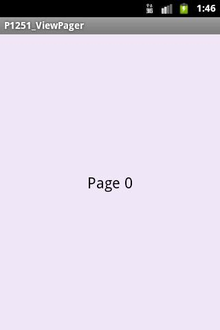
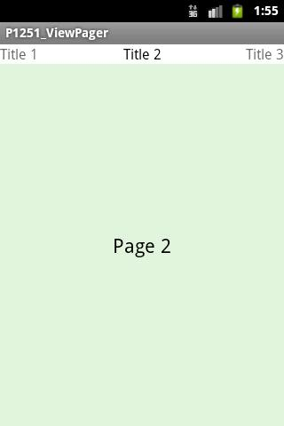
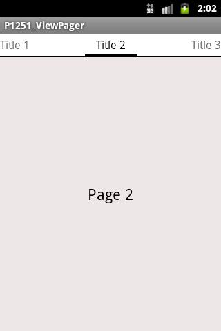
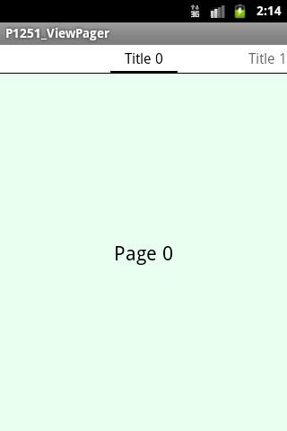
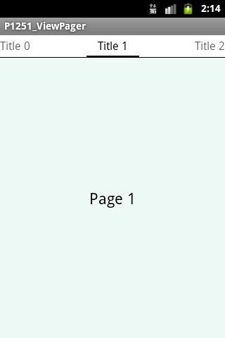

В этом уроке:
- разбираемся с ViewPager
ViewPager позволяет нам организовать удобный и красивый просмотр данных с возможностью перелистывания влево-вправо. Сам ViewPager отвечает за показ и прокрутку. Но ему нужен еще PagerAdapter, который отвечает за предоставление данных.
PagerAdapter – это базовый абстрактный класс, для которого разработчик дописывает реализацию так, как ему надо. Существует распространенная стандартная (частичная) реализация PagerAdapter, которая работает с фрагментами – это FragmentPagerAdapter. Разработчику остается только создать фрагмент и определить кол-во страниц.
Напишем простой пример и рассмотрим основные возможности ViewPager и FragmentPagerAdapter.
Создадим проект:
Project name: P1251_ViewPager
Build Target: Android 4.0
Application name: ViewPager
Package name: ru.startandroid.develop.p1251viewpager
Create Activity: MainActivity
В main.xml пишем:
<?xml version="1.0" encoding="utf-8"?>
<RelativeLayout
xmlns:android="http://schemas.android.com/apk/res/android"
xmlns:tools="http://schemas.android.com/tools"
android:layout_width="match_parent"
android:layout_height="match_parent"
tools:context=".MainActivity">
<android.support.v4.view.ViewPager
android:id="@+id/pager"
android:layout_width="match_parent"
android:layout_height="match_parent">
</android.support.v4.view.ViewPager>
</RelativeLayout>Только компонент ViewPager.
Создаем фрагмент.
layout-файл fragment.xml:
<?xml version="1.0" encoding="utf-8"?>
<RelativeLayout
xmlns:android="http://schemas.android.com/apk/res/android"
android:id="@+id/RelativeLayout1"
android:layout_width="match_parent"
android:layout_height="match_parent"
android:orientation="vertical">
<TextView
android:id="@+id/tvPage"
android:layout_width="match_parent"
android:layout_height="match_parent"
android:gravity="center"
android:textAppearance="?android:attr/textAppearanceLarge">
</TextView>
</RelativeLayout>Здесь только TextView, который будет показывать содержимое страницы.
Класс PageFragment.java:
package ru.startandroid.develop.p1251viewpager;
import java.util.Random;
import android.graphics.Color;
import android.os.Bundle;
import android.support.v4.app.Fragment;
import android.view.LayoutInflater;
import android.view.View;
import android.view.ViewGroup;
import android.widget.TextView;
public class PageFragment extends Fragment {
static final String ARGUMENT_PAGE_NUMBER = "arg_page_number";
int pageNumber;
int backColor;
static PageFragment newInstance(int page) {
PageFragment pageFragment = new PageFragment();
Bundle arguments = new Bundle();
arguments.putInt(ARGUMENT_PAGE_NUMBER, page);
pageFragment.setArguments(arguments);
return pageFragment;
}
@Override
public void onCreate(Bundle savedInstanceState) {
super.onCreate(savedInstanceState);
pageNumber = getArguments().getInt(ARGUMENT_PAGE_NUMBER);
Random rnd = new Random();
backColor = Color.argb(40, rnd.nextInt(256), rnd.nextInt(256), rnd.nextInt(256));
}
@Override
public View onCreateView(LayoutInflater inflater, ViewGroup container,
Bundle savedInstanceState) {
View view = inflater.inflate(R.layout.fragment, null);
TextView tvPage = (TextView) view.findViewById(R.id.tvPage);
tvPage.setText("Page " + pageNumber);
tvPage.setBackgroundColor(backColor);
return view;
}
}Метод newInstance создает новый экземпляр фрагмента и записывает ему в атрибуты число, которое пришло на вход. Это число – номер страницы, которую хочет показать ViewPager. По нему фрагмент будет определять, какое содержимое создавать в фрагменте.
В onCreate читаем номер страницы из аргументов. Далее формируем цвет из рандомных компонентов. Он будет использоваться для фона страниц, чтобы визуально отличать одну страницу от другой.
В onCreateView создаем View, находим на нем TextView, пишем ему простой текст с номером страницы и ставим фоновый цвет.
Т.е. на вход у нас идет номер страницы, а на выходе получаем фрагмент, который отображает этот номер и имеет случайный фоновый цвет.
Фрагмент готов, пишем MainActivity.java:
package ru.startandroid.develop.p1251viewpager;
import android.os.Bundle;
import android.support.v4.app.Fragment;
import android.support.v4.app.FragmentActivity;
import android.support.v4.app.FragmentManager;
import android.support.v4.app.FragmentPagerAdapter;
import android.support.v4.view.PagerAdapter;
import android.support.v4.view.ViewPager;
import android.support.v4.view.ViewPager.OnPageChangeListener;
import android.util.Log;
public class MainActivity extends FragmentActivity {
static final String TAG = "myLogs";
static final int PAGE_COUNT = 10;
ViewPager pager;
PagerAdapter pagerAdapter;
@Override
protected void onCreate(Bundle savedInstanceState) {
super.onCreate(savedInstanceState);
setContentView(R.layout.main);
pager = (ViewPager) findViewById(R.id.pager);
pagerAdapter = new MyFragmentPagerAdapter(getSupportFragmentManager());
pager.setAdapter(pagerAdapter);
pager.setOnPageChangeListener(new OnPageChangeListener() {
@Override
public void onPageSelected(int position) {
Log.d(TAG, "onPageSelected, position = " + position);
}
@Override
public void onPageScrolled(int position, float positionOffset,
int positionOffsetPixels) {
}
@Override
public void onPageScrollStateChanged(int state) {
}
});
}
private class MyFragmentPagerAdapter extends FragmentPagerAdapter {
public MyFragmentPagerAdapter(FragmentManager fm) {
super(fm);
}
@Override
public Fragment getItem(int position) {
return PageFragment.newInstance(position);
}
@Override
public int getCount() {
return PAGE_COUNT;
}
}
}В onCreate создаем адаптер и устанавливаем его для ViewPager. Также для ViewPager создаем обработчик событий. Он имеет три метода:
onPageSelected – дает номер текущей отображенной страницы
onPageScrolled – достаточно сложно объяснить на словах. Метод дает нам представление о текущем значении скроллера при пролистывании. Рекомендую поставить там запись в лог, полистать и посмотреть, что получается.
onPageScrollStateChanged – сообщает нам о состоянии, в котором находится скроллер (SCROLL_STATE_IDLE – ничего не скролится, SCROLL_STATE_DRAGGING – пользователь «тащит» страницу, SCROLL_STATE_SETTLING – скроллер долистывает страницу до конца)
Класс FragmentPagerAdapter - абстрактный. Нам надо реализовать в нем пару методов. Для этого создаем класс MyFragmentPagerAdapter. В нем реализуем методы:
getItem – по номеру страницы нам надо вернуть фрагмент, используем наш метод newInstance
getCount – здесь мы должны возвращать кол-во страниц, используем константу
Все сохраняем и запускаем приложение.

Полистаем страницы, в логах видим:
onPageSelected, position = 1
onPageSelected, position = 2
onPageSelected, position = 3
onPageSelected, position = 4
onPageSelected, position = 3
onPageSelected, position = 2
onPageSelected, position = 1
onPageSelected, position = 0
Срабатывает обработчик перелистываний.
PagerTitleStrip
К ViewPager можно прикрутить элемент, который будет показывать заголовки – PagerTitleStrip.
Перепишем main.xml:
<?xml version="1.0" encoding="utf-8"?>
<RelativeLayout
xmlns:android="http://schemas.android.com/apk/res/android"
xmlns:tools="http://schemas.android.com/tools"
android:layout_width="match_parent"
android:layout_height="match_parent"
tools:context=".MainActivity">
<android.support.v4.view.ViewPager
android:id="@+id/pager"
android:layout_width="match_parent"
android:layout_height="match_parent">
<android.support.v4.view.PagerTitleStrip
android:id="@+id/pagerTitleStrip"
android:layout_width="match_parent"
android:layout_height="wrap_content"
android:layout_gravity="top">
</android.support.v4.view.PagerTitleStrip>
</android.support.v4.view.ViewPager>
</RelativeLayout>Помещаем PagerTitleStrip внутрь ViewPager.
А в коде адаптера надо добавить метод getPageTitle, чтобы PagerTitleStrip знал какой текст показывать в заголовке. В класс MyFragmentPagerAdapter в MainActivity.java дописываем:
@Override
public CharSequence getPageTitle(int position) {
return "Title " + position;
}Будем возвращать просто «Title» и номер страницы
Сохраняем, запускаем.

Сверху появились заголовки.
PagerTabStrip
Заголовки могут участвовать в навигации. Для этого используется компонент PagerTabStrip. Это аналог PagerTitleStrip, но при нажатии на заголовок он перелистывает страницу. Его встраивание полностью аналогично только что рассмотренному PagerTitleStrip
Меняем main.xml:
<?xml version="1.0" encoding="utf-8"?>
<RelativeLayout
xmlns:android="http://schemas.android.com/apk/res/android"
xmlns:tools="http://schemas.android.com/tools"
android:layout_width="match_parent"
android:layout_height="match_parent"
tools:context=".MainActivity">
<android.support.v4.view.ViewPager
android:id="@+id/pager"
android:layout_width="match_parent"
android:layout_height="match_parent">
<android.support.v4.view.PagerTabStrip
android:id="@+id/pagerTabStrip"
android:layout_width="match_parent"
android:layout_height="wrap_content"
android:layout_gravity="top">
</android.support.v4.view.PagerTabStrip>
</android.support.v4.view.ViewPager>
</RelativeLayout>Он также требует от адаптера метод getPageTitle, который у нас уже реализован в MyFragmentPagerAdapter.
Сохраняем, запускаем.

Понажимайте на левый и правый заголовки, страницы будут перелистываться.
Lifecycle
Давайте подробнее рассмотрим, что происходит с фрагментами в моменты перелистывания. Для этого перепишем PageFragment.java:
package ru.startandroid.develop.p1251viewpager;
import java.util.Random;
import android.graphics.Color;
import android.os.Bundle;
import android.support.v4.app.Fragment;
import android.util.Log;
import android.view.LayoutInflater;
import android.view.View;
import android.view.ViewGroup;
import android.widget.TextView;
public class PageFragment extends Fragment {
static final String TAG = "myLogs";
static final String ARGUMENT_PAGE_NUMBER = "arg_page_number";
static final String SAVE_PAGE_NUMBER = "save_page_number";
int pageNumber;
int backColor;
static PageFragment newInstance(int page) {
PageFragment pageFragment = new PageFragment();
Bundle arguments = new Bundle();
arguments.putInt(ARGUMENT_PAGE_NUMBER, page);
pageFragment.setArguments(arguments);
return pageFragment;
}
@Override
public void onCreate(Bundle savedInstanceState) {
super.onCreate(savedInstanceState);
pageNumber = getArguments().getInt(ARGUMENT_PAGE_NUMBER);
Log.d(TAG, "onCreate: " + pageNumber);
Random rnd = new Random();
backColor = Color.argb(40, rnd.nextInt(256), rnd.nextInt(256), rnd.nextInt(256));
int savedPageNumber = -1;
if (savedInstanceState != null) {
savedPageNumber = savedInstanceState.getInt(SAVE_PAGE_NUMBER);
}
Log.d(TAG, "savedPageNumber = " + savedPageNumber);
}
@Override
public View onCreateView(LayoutInflater inflater, ViewGroup container,
Bundle savedInstanceState) {
View view = inflater.inflate(R.layout.fragment, null);
TextView tvPage = (TextView) view.findViewById(R.id.tvPage);
tvPage.setText("Page " + pageNumber);
tvPage.setBackgroundColor(backColor);
return view;
}
@Override
public void onSaveInstanceState(Bundle outState) {
super.onSaveInstanceState(outState);
outState.putInt(SAVE_PAGE_NUMBER, pageNumber);
}
@Override
public void onDestroy() {
super.onDestroy();
Log.d(TAG, "onDestroy: " + pageNumber);
}
}В onCreate мы добавили запись в лог и попытку чтения сохраненного значения из savedInstanceState.
В onSaveInstanceState сохраняем номер страницы.
В onDestroy просто пишем лог.
Тем самым мы увидим, пересоздается ли фрагмент и может ли он при этом восстанавливать сохраненные значения.
Все сохраним, запустим приложение.

В логах видим:
onCreate: 0
savedPageNumber = -1
onCreate: 1
savedPageNumber = -1
Создался фрагмент для нулевой и первой страницы. Хотя видна сейчас только нулевая. Адаптер разумно заранее создает следующую к показу страницу, чтобы при пролистывании не было тормозов. Фрагменты создаются первый раз, вытаскивать из savedInstanceState нечего, поэтому видим savedPageNumber = -1.
Перелистнем на первую страницу

В логах:
onPageSelected, position = 1
onCreate: 2
savedPageNumber = -1
Первую показал, вторую заранее создал.
Перелистнем еще пару страниц
onPageSelected, position = 2
onCreate: 3
savedPageNumber = -1
onPageSelected, position = 3
onCreate: 4
savedPageNumber = -1
Все также и остается. Заметьте, что не срабатывает onDestroy. Т.е. все страницы не уничтожаются, а хранятся в памяти.
Полистаем назад.
onPageSelected, position = 2
onPageSelected, position = 1
onPageSelected, position = 0
Т.к. не было никаких уничтожений, то нет и никаких созданий. Достает страницы-фрагменты из памяти и показывает.
Можно сделать вывод. Этот адаптер быстрый, т.к. не требует пересоздания. Но затратный, т.к. все держит в памяти. Т.е. подходит для небольшого количества страниц. Например, набор вкладок или Wizard.
Правда есть нюанс: хоть сами фрагменты и не уничтожаются, но уничтожается их View-структура и потом создается заново. Вставьте лог в метод onCreateView и убедитесь. Хранится структура только текущей страницы и по одной справа и слева. Это кол-во соседних страниц с сохраняемой View-структурой может быть настроено методом setOffscreenPageLimit.
FragmentStatePagerAdapter
Этот адаптер аналогичен FragmentPagerAdapter, он также работает с фрагментами. Но использует другие механизмы работы с страницами. Он не хранит страницы в памяти, а каждый раз создает их. Давайте используем его. Для этого надо в MainActivity.java просто заменить FragmentPagerAdapter на FragmentStatePagerAdapter в секции импорта и в описании класса MyFragmentPagerAdapter.
...
import android.support.v4.app.FragmentStatePagerAdapter;
...
private class MyFragmentPagerAdapter extends FragmentStatePagerAdapter {
...И все. Сохраняем, запускаем.
Открылась нулевая страница. В логах видим:
onCreate: 0
savedPageNumber = -1
onCreate: 1
savedPageNumber = -1
Перелистнем на первую страницу
onPageSelected, position = 1
onCreate: 2
savedPageNumber = -1
Пока что поведение не отличается от прошлого адаптера.
Перелистнем на вторую страницу.
onPageSelected, position = 2
onDestroy: 0
onCreate: 3
savedPageNumber = -1
Вот и отличие. Видим, что также открылась вторая страница, также создалась третья, но при этом уничтожилась нулевая.
Перелистнем на третью:
onPageSelected, position = 3
onDestroy: 1
onCreate: 4
savedPageNumber = -1
Та же ситуация: отобразилась третья, уничтожилась первая, создалась четвертая.
Перелистнем обратно на вторую:
onPageSelected, position = 2
onDestroy: 4
onCreate: 1
savedPageNumber = 1
Отобразилась вторая, уничтожилась четвертая, создалась первая (и прочла сохраненное значение из savedInstanceState).
Т.е. видно, что адаптер хранит только текущую страницу и по одной соседней (справа и слева), чтобы быстро можно было перелистнуть.
Можно сделать вывод. Этот адаптер не очень быстрый, он будет подтормаживать при многократном перелистывании в обе стороны, т.к. постоянно пересоздает страницы. Но при этом он требует минимум памяти. Т.е. он подходит для большого количества страниц. Например, просмотр писем, смс, страниц книги.
Используйте тот адаптер, который вам больше подходит в данной ситуации. Или наследуйте класс PagerAdapter и создавайте адаптер под свои нужды.
Программное перелистывание
Чтобы программно перелистнуть страницу ViewPager используйте метод setCurrentItem. А чтобы узнать текущую страницу - getCurrentItem.